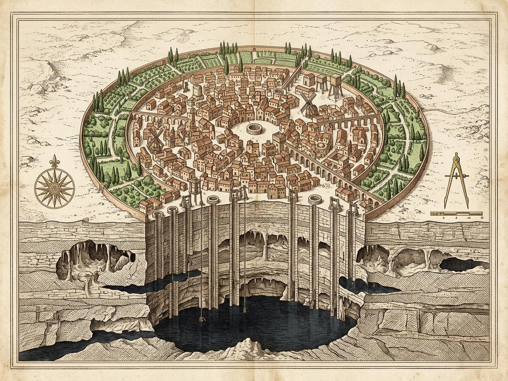
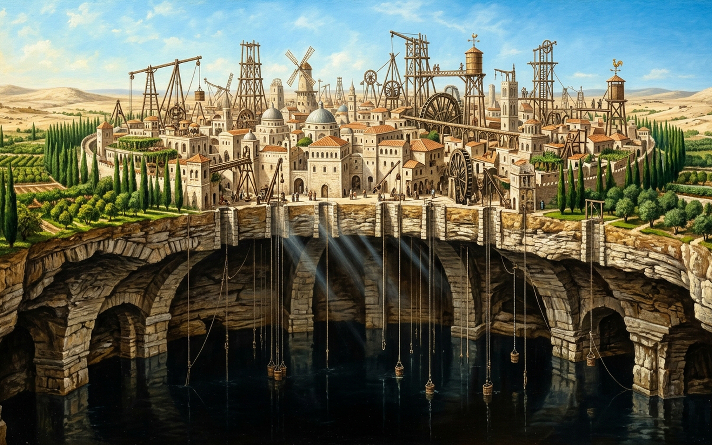

IsauraI · Thin Cities 1 · Thousand WellsLiving Wells4Dry Bores1Aqueducts3Upward Drive0.52TRANSECT X = 0.500GREEN BORDER · LAKE CONTOUR [0.17–0.83]Buried Contour & Green BorderDIVIDED SCHISM · CITY OF THE THOUSAND WELLSAn Invisible Landscape Conditions the Visible OneOver a deep subterranean lake enclosed by a calcareous rock sky, a green border repeats the dark outline of the buried water; everything that moves in the sunlit air is driven upward by the lapping wave.Archival Plates — City of the Thousand Wells

Copperplate Hydrogeological Map (map.png / map.svg · 1600×1200) — awaiting Royal Plate Guild impression
Plate I · Hydrogeological Survey (map.png · 1600×1200) — Buried Black Lake & Green Surface Border [0.17–0.83]

Architectural City Plate (image.png · 1600×1000) — awaiting Royal Plate Guild impression
Plate II · Prospect of the Dual Religions (image.png · 1600×1000) — Gods of the Depths & Gods of Ascent